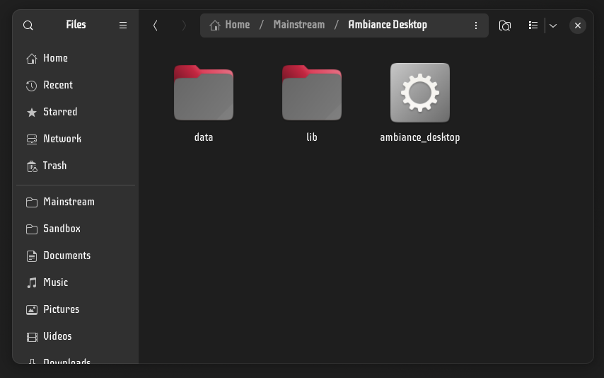
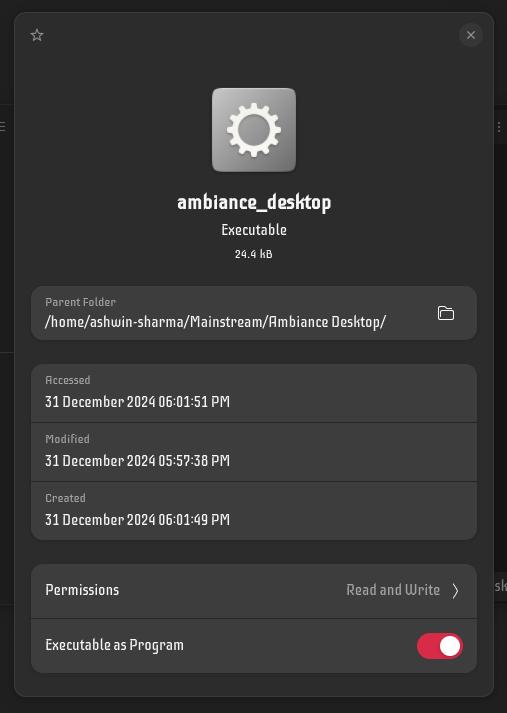
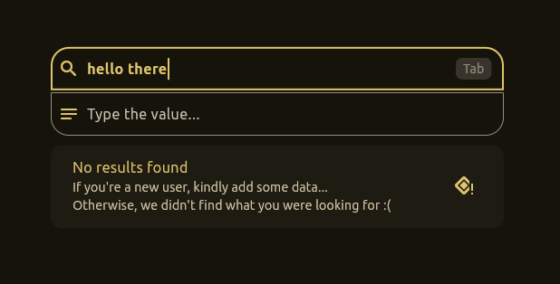
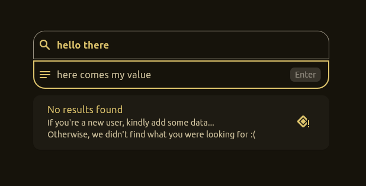
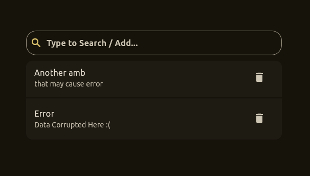
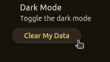
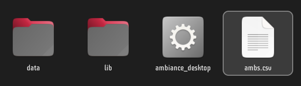
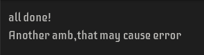

Installing Ambiance Desktop is one of the simplest tasks.
Thanks to its embedded graphics and backend engine, that works independent of your platform, provided that your platform can run that engine. Yes it works like java!
As A Native App
Download ambiance_deb.tar.xz from Download portion or My Portfolio Site
Extract the tarball package using Nautilus, or using CLI:
cd Downloads # or location where you downloaded
tar -xf ambiance_deb.tar.gz
Run install.sh
cd ambiance
chmod +x ./install.sh && ./install.sh
OR use as AppImage [ Standalone ]
Just before you begin, know some facts about AppImage...
Stays in the form of a loose file
Requires manual navigation and running
Not indexed in app listing (generally)
Installation process:
Extract the package (as indicated above)
Open the extracted directory

Open properties of the AppImage (ambiance_desktop) : Usually Alt + Enter

Ensure that it is Executable as Program
Now, just double click the AppImage and you are ready to go :)
Getting Started
As we know, Ambiance Desktop is derived from the android Ambiance app, it focuses on speedy and reliable key-value pairs.
Using shortcut keys for quick input
As you can see on the end, when you type, the app suggests you to press the Tab and Enter key.
Tab key to jump

When typing the title, you can hit Tab to jump to value
Enter to save

When typing the value, you can hit Enter to save the pair
Dealing With Errors
File Corruption

Most probably, a file corruption must look like this, or even worse...
There are 2 ways to fix the error:
Method 1
Navigate to app settings.
Click on Clear My Data.

Method 2 (advanced)
Navigate to /opt/ambiance or your AppImage directory if you use AppImage.
Here you must find all your data in csv format. Open it.

Find out the line causing error

Here, clearly the first line doesn't have 2 members like others, just as a normal CSV should.
Manually fix this error, either remove or repair this line.